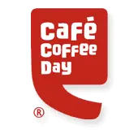

Etihad Airways, a renowned international airline, embarked on a project to introduce "Etihad Credit," an innovative initiative aimed at providing greater flexibility and convenience to its guests. The core idea behind Etihad Credit was to offer travelers the freedom to adjust their travel plans by allowing free cancellations and, in return, providing the original booking value as credit for future trips. This project was a strategic response to the evolving travel landscape, acknowledging the need for adaptability and peace of mind for passengers.
Conducted in-depth research to understand the evolving needs and pain points of travelers, especially in the context of booking flexibility and cancellations. Analyzed competitor offerings and industry trends.
Shared vision
During the discovery phase, collaborating with stakeholders to gain a comprehensive understanding of overarching business objectives and desired outcomes. This phase aims to address fundamental questions like "what are our goals?" and "what constitutes success?" In doing so, it aligns the team's efforts toward identifying and addressing the most impactful problems (and subsequently crafting solutions) in pursuit of those outcomes.
stakeholder interview questions
- What is your understanding of the goals and objectives of this project?
- How does this project align with the broader strategic initiatives of the organization?
- Who are the primary users or customers affected by this project?
- What are the key needs, pain points, or preferences of these users or customers that we should consider?
- WWhat are the current challenges or pain points related to the area this project addresses?
- What do you envision as the potential positive outcomes or benefits of this project?
- How will the success of this project be measured or evaluated?
- What potential risks or concerns do you foresee for this project, and how do you suggest we mitigate them?
The Findings
- Travel can be unpredictable, and passengers may face circumstances that necessitate changes to their itineraries. Vouchers offer a safety net by ensuring that the value of their original bookings is preserved as travel credits. This helps travelers feel more secure and less hesitant when making reservations, knowing they have an option to reschedule or use the credit for future trips.
- Airlines like Etihad Airways aim to build strong customer relationships and encourage loyalty. By providing vouchers as an option for canceled or delayed flights, they demonstrate a commitment to customer satisfaction. This can lead to higher customer retention rates, as passengers are more likely to choose an airline that offers such flexibility.
- Vouchers can also benefit airlines by reducing the financial impact of refund requests. Instead of issuing full refunds for canceled flights, airlines can offer vouchers, which may result in lower immediate cash outflows.
- In a competitive airline industry, offering vouchers as part of a comprehensive customer service strategy can serve as a unique selling point. Travelers are more inclined to choose airlines that provide them with options and solutions when their plans change unexpectedly.
User Interview
Interviewing the Traveller about their travel habits and to check that the problem we were trying to solve is actually a problem for the user or not.
Some of the questions that were asked during the interview
- How frequently do you travel with Etihad Airways or other airlines that offer similar credit systems?
- Can you describe a recent experience where you had to change or cancel a flight booking with Etihad Airways?
- Are you aware of airlines that offer flexible booking options that allow changes or cancellations with minimal fees?
- If you are aware of such options, have you ever used them for a future flight booking?
- If you haven't used them, what factors or concerns have prevented you from doing so?
- What aspects of flexible booking options do you find most convenient and user-friendly?
- Conversely, have you encountered any challenges or areas of improvement when making changes to your travel plans?
- Is there anything else you'd like to share regarding your experiences with airline booking and flexibility, especially related to changes or cancellations?
Pain points
- Many travelers encounter the need to change or cancel their flight bookings, often due to unforeseen circumstances, which can be disruptive and inconvenient.
- The uncertainty of future plans can lead to anxiety, as travelers may hesitate to make reservations, fearing that changes may incur additional fees.
- Complex Voucher Redemption: The process of redeeming vouchers for future travel can sometimes involve navigating through complex procedures, potentially causing confusion or frustration for travelers.
- Limited Awareness: Some travelers may not be fully aware of the voucher programs offered by airlines in response to canceled or delayed flights, potentially missing out on the benefits.
- Hesitation to Use Vouchers: Even when aware, travelers may be hesitant to use vouchers due to concerns about their eligibility, expiration dates, or the associated redemption processes.
- Complicated Redemption: Travelers often find the process of redeeming vouchers to be complicated or time-consuming, impacting their overall experience and potentially discouraging them from using their travel credits.
- Inconvenience: The inconvenience of managing vouchers, coupled with concerns about their terms and conditions, can deter travelers from taking advantage of these programs and the flexibility they offer.
- Desire for Simplicity: Travelers prefer a simple and straightforward process for redeeming vouchers to reduce stress and confusion when making changes to their travel plans.
- Transparency and Information: Clear information about the terms and conditions of voucher programs is essential to build trust and encourage their use.
- Value for Loyalty: Travelers value airlines that offer vouchers as part of their loyalty program, making them more likely to choose such carriers in the future, provided the redemption process is user-friendly.
Competitive Analysis
Study competitors' loyalty programs and credit systems to identify best practices and areas for improvement

Indirect competitors
- 
This phase involves clarifying the specific use cases that the Etihad Credit system should address to meet the needs of both Etihad Airways and its passengers. Here, we describe the defining process, along with some key use cases
Use cases
- The user wants to redeem a voucher received from a canceled or delayed flight for a future booking with the same airline.
- The user wants to manage multiple vouchers received from different flights efficiently.
- The user needs to make changes to an existing flight booking using a voucher.
- The user wants to review their past voucher redemptions and usage history.
- The user wants to transfer their voucher to another passenger, such as a family member or friend.
- The user has multiple vouchers and wishes to consolidate them into a single voucher for easier management.
- The user wants to track their voucher usage and monitor how much credit they have left.
- The user wants personalized recommendations on how to best use their available vouchers for upcoming trips.
- The user is planning a group trip and wants to book multiple tickets using vouchers.
- The user wants to use their vouchers to upgrade their travel class or add extra amenities to their flight.
- The user wants to use their vouchers not only for flight bookings but also for ancillary services such as baggage fees, seat selection, or in-flight meals.
- The user has vouchers from multiple canceled or delayed flights and wants to redeem them collectively for a more significant trip.
Personas
Based on the user interview, user pain points I created 2 personas to humanize the overall design process
Problem Statement : 1
Complex Voucher Redemption for Occasional Vacation Travelers
Issue:
Occasional vacation travelers like David find the voucher redemption process overly complex and may hesitate to use their vouchers due to concerns about potential errors.
Impact:
This can discourage occasional travelers from utilizing their vouchers effectively, resulting in missed opportunities for both travelers and travel providers.
Solution:
Create a straightforward and intuitive voucher redemption process, with user-friendly mobile app support, to address the needs of occasional travelers and ensure a seamless experience.
Problem Statement : 2
Voucher Management for Frequent Business Travelers
Issue:
Frequent business travelers like Sarah struggle to efficiently manage multiple travel vouchers and keep track of their expiration dates.
Impact:
This leads to potential loss of voucher value and can create a complex and time-consuming experience for travelers who value convenience and efficiency.
Solution:
Develop a user-friendly digital tool or app that simplifies voucher management, provides timely expiration reminders, and streamlines the redemption process for frequent business travelers.
User case
User Case 1: Simple Voucher Redemption for Occasional Vacation Travelers
Actor:
Occasional Vacation Traveler (David)
Goal:
Easily redeem a travel voucher to book an affordable vacation.
Main Flow:
David opens the airline's mobile app.
He notices a prominent option for voucher redemption and clicks on it.
David enters the voucher code from the email he received.
The app verifies the code and displays the available voucher balance.
David selects a destination and travel dates for his vacation.
The app calculates the cost and applies the voucher balance as payment.
David receives a booking confirmation with voucher redemption details and travel itinerary.
User case
User Case 2: Simple Voucher Redemption for Occasional Vacation Travelers
Actor:
Frequent Business Traveler (Sarah)
Goal:
Efficiently manage and utilize multiple travel vouchers for business travel.
Main Flow:
Sarah logs into the airline's voucher management app.
The app displays a list of all her active vouchers, including their respective expiration dates.
Sarah selects a voucher that she intends to use for an upcoming business trip.
The app provides options for redeeming the voucher, such as booking a flight, upgrading her seat, or reserving a hotel room.
Sarah chooses to book a flight and enters her travel details.
The app calculates the total cost and deducts the voucher value from the payment.
Sarah receives a booking confirmation with details of the voucher redemption and her flight.
User flow
Mockups
Usability testing : 1
During this phase, the goals is to assess the system's usability, identifying pain points in voucher management, and measuring user satisfaction.